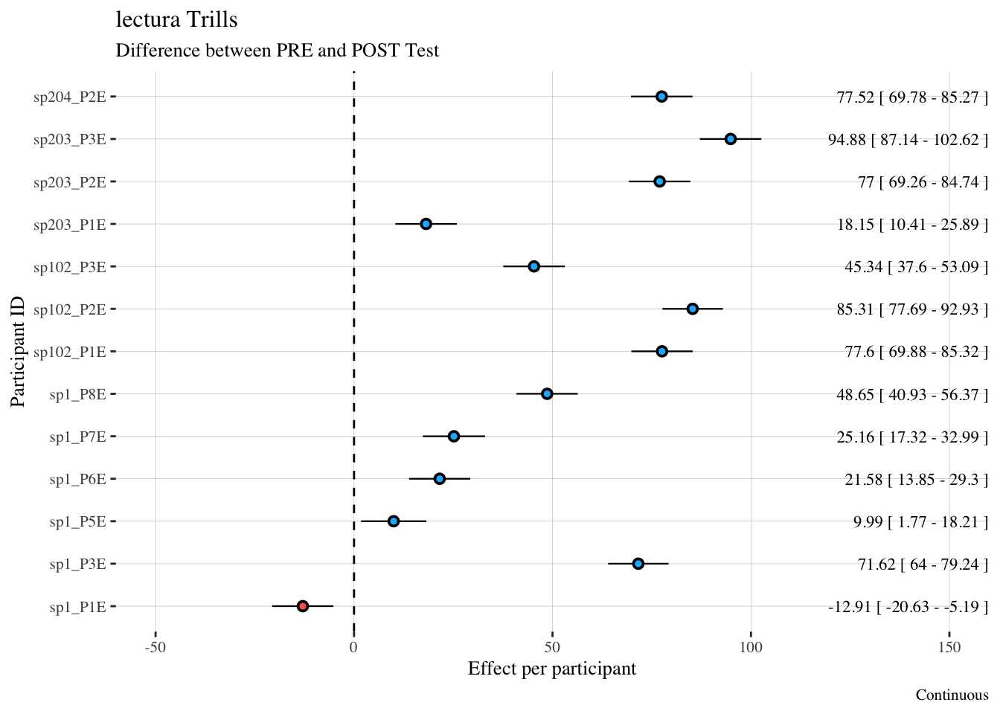

| level | PRE | POST |
|---|---|---|
| sp1 | 40.8 (25.99) | 24.51 (7.87) |
| sp102 | 41.93 (18.29) | 23.34 (4.11) |
| sp203/204 | 48.13 (15.48) | 25.72 (4.14) |
Reports
Statistical Analysis
Six total linear mixed effects models are reported here. For each of three tasks (the Sentence Reading Task, the Lectura task, and the Picture Naming Task) two models were run, where one was for taps and the other was for trills. In each model, the outcome/dependent variable was duration in milliseconds. Each model included the fixed effects predictors of time (2 levels: pre or post-test), group, (3 levels: Spanish 1 - sp1, Spanish 2, sp102, and the combined Spanish 203/204 group) and their interaction. To examine individual differences, a random slope by participant was included to determine how test time impacted each participant individually. These random slopes produced by the model represent adjustments to the fixed effect predictor of interest, and show how each participant’s duration of taps or trills changed as a function of time. Main effects and interactions were assessed by carrying out nested model comparisons, and model assumptions were checked by visual inspection of Q-Q plots.
Sentence Reading Task
Group Analysis
Table 1 shows the mean and standard deviation of taps by each class level at PRE and POST tests, and table 2 shows the same information for trills. Figure 1 shows a boxplot of the raw data for taps, while Figure 2 shows a boxplot for trills.
Table 1
Table 2
| level | PRE | POST |
|---|---|---|
| sp1 | 57.41 (32.56) | 84.89 (40.96) |
| sp102 | 60.87 (27.24) | 114.31 (25.77) |
| sp203/204 | 50.9 (17.63) | 115.06 (45.1) |
Figure 1
Figure 2
An inspection of Tables 1 and 2 together with Figures 1 and 2 suggest that, overall, trills exhibited longer duration at post-test, while taps were associated with shorter duration.
Table 3 represent a table of nested model comparisons using the anova function in R that was carried out to assess main effects and interactions.
Table 4 shows the results of the linear mixed effects model.
Table 3: Nested Model Comparisons for tap models in the SRT
| Model | Chisq | Df | P-value |
|---|---|---|---|
| Time | 14.79 | 1 | < .05 |
| Group | 3.39 | 2 | 0.18 |
| Time:Group Interaction | 0.49 | 2 | 0.78 |
Table 4: Nested Model Comparisons for trill models in the SRT
| Model | Chisq | Df | P-value |
|---|---|---|---|
| Time | 10.24 | 1 | < .05 |
| Group | 0.92 | 2 | 0.63 |
| Time:Group Interaction | 2.30 | 2 | 0.32 |
Table 5: Sentence Reading Task Taps Model Table
| duration | |||
|---|---|---|---|
| Predictors | Estimates | CI | p |
| (Intercept) | 41.12 | 29.64 – 52.59 | <0.001 |
| time [POST] | -16.62 | -28.22 – -5.01 | 0.005 |
| level [sp102] | 0.82 | -19.05 – 20.69 | 0.935 |
| level [sp203/204] | 7.02 | -11.12 – 25.16 | 0.448 |
| time [POST] * level [sp102] |
-1.98 | -22.07 – 18.11 | 0.847 |
| time [POST] * level [sp203/204] |
-5.80 | -24.14 – 12.55 | 0.536 |
| Random Effects | |||
| σ2 | 171.51 | ||
| τ00 participant | 202.63 | ||
| τ11 participant.timePOST | 204.77 | ||
| ρ01 participant | -1.00 | ||
| ICC | 0.37 | ||
| N participant | 13 | ||
| Observations | 1713 | ||
| Marginal R2 / Conditional R2 | 0.257 / 0.534 | ||
Table 6 Sentence Reading Task Trills Model Table
| duration | |||
|---|---|---|---|
| Predictors | Estimates | CI | p |
| (Intercept) | 57.14 | 42.14 – 72.13 | <0.001 |
| time [POST] | 27.52 | -6.66 – 61.69 | 0.114 |
| level [sp102] | 3.87 | -22.09 – 29.82 | 0.770 |
| level [sp203/204] | -6.27 | -29.96 – 17.43 | 0.604 |
| time [POST] * level [sp102] |
25.83 | -33.36 – 85.02 | 0.392 |
| time [POST] * level [sp203/204] |
36.69 | -17.35 – 90.72 | 0.183 |
| Random Effects | |||
| σ2 | 506.10 | ||
| τ00 participant | 339.77 | ||
| τ11 participant.timePOST | 1799.87 | ||
| ρ01 participant | -0.52 | ||
| ICC | 0.62 | ||
| N participant | 13 | ||
| Observations | 1275 | ||
| Marginal R2 / Conditional R2 | 0.318 / 0.743 | ||
Figure 3 is a visualization of Table 4. It shows each estimate surrounded by its 95% confidence interval.
Figure 3: Sentence Reading Task Taps Model Visualization
Figure 4 Sentence Reading Task Trills Model Visualization
Individual Analysis
Table 7: SRT - mean tap duration of each participant in pre and post tests
| level | participant | PRE | POST |
|---|---|---|---|
| sp1 | sp1_P1E | 35.33 (22.28) | 29.21 (9.32) |
| sp1 | sp1_P3E | 60.46 (40.2) | 24.46 (9.57) |
| sp1 | sp1_P5E | 23.32 (7.87) | 24.45 (6.66) |
| sp1 | sp1_P6E | 35.26 (13.24) | 21.86 (5.75) |
| sp1 | sp1_P7E | 63.72 (16.83) | 23.4 (8.49) |
| sp1 | sp1_P8E | 28.63 (9.27) | 23.51 (4.21) |
| sp102 | sp102_P1E | 43.23 (11.2) | 22.41 (5.21) |
| sp102 | sp102_P2E | 47.93 (27.12) | 23.39 (3.55) |
| sp102 | sp102_P3E | 34.66 (7.34) | 24.24 (3.09) |
| sp203/204 | sp203_P1E | 56.11 (8.77) | 26.53 (3.98) |
| sp203/204 | sp203_P2E | 34.78 (6.5) | 25.45 (3.51) |
| sp203/204 | sp203_P3E | 62.69 (15.32) | 26.24 (5.03) |
| sp203/204 | sp204_P2E | 38.97 (7.98) | 24.75 (3.89) |
Table 8: SRT - mean trill duration of each participant in pre and post tests
| level | participant | PRE | POST |
|---|---|---|---|
| sp1 | sp1_P1E | 98.41 (37.86) | 66.21 (17.67) |
| sp1 | sp1_P3E | 38.81 (22.69) | 146.35 (33.37) |
| sp1 | sp1_P5E | 30.67 (16.51) | 36.02 (12.24) |
| sp1 | sp1_P6E | 56.59 (18.86) | 69.76 (19.6) |
| sp1 | sp1_P7E | 53.92 (16.58) | 80.47 (20.03) |
| sp1 | sp1_P8E | 64.36 (24.79) | 109.1 (19.5) |
| sp102 | sp102_P1E | 40.75 (11.58) | 119.04 (20.85) |
| sp102 | sp102_P2E | 70.28 (24.89) | 120.35 (27.11) |
| sp102 | sp102_P3E | 72 (29.6) | 103.66 (25.99) |
| sp203/204 | sp203_P1E | 50.24 (9.38) | 51.48 (11.72) |
| sp203/204 | sp203_P2E | 55.56 (28.49) | 118.98 (27.66) |
| sp203/204 | sp203_P3E | 43.88 (10.41) | 148.28 (27.84) |
| sp203/204 | sp204_P2E | 53.8 (13) | 141.56 (23.99) |
Figure 5: SRT - boxplots of the duration of taps per participant at pre and post-test
Figure 6: SRT - boxplots of the duration of trills per participant at pre and post-test
Figure 7: Random Effects plot Taps
Figure 8: Random Effects plot Trills
Lectura
Group Analysis
Table 1 shows the mean and standard deviation of taps by each class level at PRE and POST tests, and table 2 shows the same information for trills. Figure 1 shows a boxplot of the raw data for taps, while Figure 2 shows a boxplot for trills.
Table 9
| level | PRE | POST |
|---|---|---|
| sp1 | 44.4 (23.83) | 22.7 (6.44) |
| sp102 | 42.45 (15.2) | 22.92 (3.65) |
| sp203/204 | 46.93 (13.48) | 25.74 (5.59) |
Table 10
| level | PRE | POST |
|---|---|---|
| sp1 | 57.68 (30.78) | 84.48 (34.38) |
| sp102 | 54.87 (26.03) | 124.21 (29.16) |
| sp203/204 | 51.31 (18.96) | 118.2 (42.46) |
Figure 9
Figure 10
Table 11: Nested Model Comparisons for tap models in the lectura
| Model | Chisq | Df | P-value |
|---|---|---|---|
| Time | 18.23 | 1 | < .05 |
| Group | 5.70 | 2 | 0.06 |
| Time:Group Interaction | 0.08 | 2 | 0.96 |
Table 12: Nested Model Comparisons for trill models in the lectura
| Model | Chisq | Df | P-value |
|---|---|---|---|
| Time | 14.54 | 1 | < .05 |
| Group | 0.12 | 2 | 0.94 |
| Time:Group Interaction | 5.61 | 2 | 0.06 |
Table 13: lectura Taps Model Table
| duration | |||
|---|---|---|---|
| Predictors | Estimates | CI | p |
| (Intercept) | 44.65 | 33.37 – 55.93 | <0.001 |
| time [POST] | -21.96 | -32.99 – -10.93 | <0.001 |
| level [sp102] | -2.14 | -21.68 – 17.40 | 0.830 |
| level [sp203/204] | 2.20 | -15.64 – 20.04 | 0.809 |
| time [POST] * level [sp102] |
2.36 | -16.73 – 21.46 | 0.808 |
| time [POST] * level [sp203/204] |
0.84 | -16.59 – 18.28 | 0.924 |
| Random Effects | |||
| σ2 | 130.75 | ||
| τ00 participant | 194.19 | ||
| τ11 participant.timePOST | 181.25 | ||
| ρ01 participant | -1.00 | ||
| ICC | 0.43 | ||
| N participant | 13 | ||
| Observations | 840 | ||
| Marginal R2 / Conditional R2 | 0.334 / 0.619 | ||
Table 14 lectura Trills Model Table
| duration | |||
|---|---|---|---|
| Predictors | Estimates | CI | p |
| (Intercept) | 56.65 | 42.71 – 70.58 | <0.001 |
| time [POST] | 27.35 | 2.05 – 52.64 | 0.034 |
| level [sp102] | -2.15 | -26.21 – 21.91 | 0.861 |
| level [sp203/204] | -5.33 | -27.29 – 16.62 | 0.633 |
| time [POST] * level [sp102] |
42.07 | -1.71 – 85.85 | 0.060 |
| time [POST] * level [sp203/204] |
39.54 | -0.43 – 79.51 | 0.053 |
| Random Effects | |||
| σ2 | 513.59 | ||
| τ00 participant | 265.66 | ||
| τ11 participant.timePOST | 925.04 | ||
| ρ01 participant | -0.20 | ||
| ICC | 0.55 | ||
| N participant | 13 | ||
| Observations | 400 | ||
| Marginal R2 / Conditional R2 | 0.404 / 0.733 | ||
Figure 11: lectura Taps Model Visualization
Figure 12: lectura Trills Model Visualization
Individual Analysis
Table 15: lectura - mean tap duration of each participant in pre and post tests
| level | participant | PRE | POST |
|---|---|---|---|
| sp1 | sp1_P1E | 46.32 (23.02) | 25.8 (8.26) |
| sp1 | sp1_P3E | 43.06 (17.28) | 20.96 (4.82) |
| sp1 | sp1_P5E | 26.06 (16.18) | 22.82 (9.02) |
| sp1 | sp1_P6E | 42.68 (15.04) | 20.21 (3.67) |
| sp1 | sp1_P7E | 77.07 (22.92) | 22.5 (5.76) |
| sp1 | sp1_P8E | 32.76 (12.1) | 23.09 (3.14) |
| sp102 | sp102_P1E | 42.35 (8.66) | 22.24 (4.7) |
| sp102 | sp102_P2E | 48.72 (21.96) | 24.36 (2.52) |
| sp102 | sp102_P3E | 36.45 (8.5) | 22.13 (2.93) |
| sp203/204 | sp203_P1E | 59.55 (11.25) | 28.88 (6.05) |
| sp203/204 | sp203_P2E | 36.16 (8.36) | 24.58 (3.66) |
| sp203/204 | sp203_P3E | 52.52 (9.6) | 24.94 (7.35) |
| sp203/204 | sp204_P2E | 39.18 (8.82) | 24.53 (3.11) |
Table 16: lectura - mean trill duration of each participant in pre and post tests
| level | participant | PRE | POST |
|---|---|---|---|
| sp1 | sp1_P1E | 86.93 (34.16) | 68.81 (16.75) |
| sp1 | sp1_P3E | 53.25 (22.29) | 127.69 (26.92) |
| sp1 | sp1_P5E | 23.58 (15.84) | 36.33 (9.01) |
| sp1 | sp1_P6E | 71.07 (28.98) | 90.94 (28.25) |
| sp1 | sp1_P7E | 51.93 (18.89) | 77.44 (17.97) |
| sp1 | sp1_P8E | 52.4 (23.71) | 102.69 (13.55) |
| sp102 | sp102_P1E | 34.6 (8.69) | 114.56 (25.48) |
| sp102 | sp102_P2E | 62.5 (22.79) | 148 (26.12) |
| sp102 | sp102_P3E | 66.25 (29.61) | 109.13 (19.25) |
| sp203/204 | sp203_P1E | 45.12 (7.93) | 60.93 (11.91) |
| sp203/204 | sp203_P2E | 49.88 (20.76) | 127.6 (28.43) |
| sp203/204 | sp203_P3E | 47.75 (10.59) | 144.6 (21.79) |
| sp203/204 | sp204_P2E | 62.5 (26.73) | 139.67 (36.38) |
Figure 13: lectura - boxplots of the duration of taps per participant at pre and post-test
Figure 14: lectura - boxplots of the duration of trills per participant at pre and post-test
Figure 15: Random Effects plot Taps
Figure 16: Random Effects plot Trills

Picture Naming Task
Group Analysis
Table 17
| level | PRE | POST |
|---|---|---|
| sp1 | 57.75 (38.52) | 23.41 (6.65) |
| sp102 | 45.06 (12.95) | 23.14 (3.86) |
| sp203/204 | 63.52 (31.26) | 28.53 (5.11) |
Table 18
| level | PRE | POST |
|---|---|---|
| sp1 | 49.33 (21.91) | 83.55 (37.68) |
| sp102 | 50.15 (18.37) | 128.59 (24.43) |
| sp203/204 | 56.4 (26.56) | 113.31 (48.79) |
Figure 17
Figure 18
An inspection of Tables 1 and 2 together with Figures 1 and 2 suggest that, overall, trills exhibited longer duration at post-test, while taps were associated with shorter duration.
Table 3 represent a table of nested model comparisons using the anova function in R that was carried out to assess main effects and interactions.
Table 4 shows the results of the linear mixed effects model.
Table 19: Nested Model Comparisons for tap models in the Picture Naming Task
| Model | Chisq | Df | P-value |
|---|---|---|---|
| Time | 11.36 | 1 | < .05 |
| Group | 3.10 | 2 | 0.21 |
| Time:Group Interaction | 0.22 | 2 | 0.89 |
Table 20: Nested Model Comparisons for trill models in the Picture Naming Task
| Model | Chisq | Df | P-value |
|---|---|---|---|
| Time | 17.01 | 1 | < .05 |
| Group | 0.78 | 2 | 0.68 |
| Time:Group Interaction | 4.39 | 2 | 0.11 |
Table 21: Picture Naming Task Taps Model Table
| duration | |||
|---|---|---|---|
| Predictors | Estimates | CI | p |
| (Intercept) | 53.54 | 31.31 – 75.77 | <0.001 |
| time [POST] | -30.19 | -52.33 – -8.05 | 0.008 |
| level [sp102] | -7.29 | -46.28 – 31.70 | 0.713 |
| level [sp203/204] | 6.31 | -28.99 – 41.61 | 0.725 |
| time [POST] * level [sp102] |
7.11 | -31.89 – 46.10 | 0.720 |
| time [POST] * level [sp203/204] |
-1.23 | -36.43 – 33.97 | 0.945 |
| Random Effects | |||
| σ2 | 213.91 | ||
| τ00 participant | 740.62 | ||
| τ11 participant.timePOST | 713.63 | ||
| ρ01 participant | -1.00 | ||
| N participant | 13 | ||
| Observations | 230 | ||
| Marginal R2 / Conditional R2 | 0.517 / NA | ||
Table 22: Picture Naming Task Trills Model Table
| duration | |||
|---|---|---|---|
| Predictors | Estimates | CI | p |
| (Intercept) | 48.17 | 36.05 – 60.29 | <0.001 |
| time [POST] | 36.30 | 11.22 – 61.38 | 0.005 |
| level [sp102] | 2.00 | -19.25 – 23.26 | 0.853 |
| level [sp203/204] | 7.89 | -11.23 – 27.01 | 0.417 |
| time [POST] * level [sp102] |
43.02 | -0.64 – 86.68 | 0.053 |
| time [POST] * level [sp203/204] |
23.52 | -16.16 – 63.20 | 0.244 |
| Random Effects | |||
| σ2 | 479.35 | ||
| τ00 participant | 180.45 | ||
| τ11 participant.timePOST | 882.15 | ||
| ρ01 participant | 0.11 | ||
| ICC | 0.59 | ||
| N participant | 13 | ||
| Observations | 269 | ||
| Marginal R2 / Conditional R2 | 0.433 / 0.765 | ||
Figure 3 is a visualization of Table 4. It shows each estimate surrounded by its 95% confidence interval.
Figure 19: Picture Naming Task Taps Model Visualization
Figure 20: Picture Naming Task Trills Model Visualization
Individual Analysis
Table 23: Picture Naming Task - mean tap duration of each participant in pre and post tests
| level | participant | PRE | POST |
|---|---|---|---|
| sp1 | sp1_P1E | 26.62 (8.62) | 26.7 (9.17) |
| sp1 | sp1_P3E | 74.82 (30.96) | 25.11 (7.7) |
| sp1 | sp1_P5E | 23.18 (9.61) | 23.33 (8.8) |
| sp1 | sp1_P6E | 49.17 (23.37) | 21.3 (3.56) |
| sp1 | sp1_P7E | 107.43 (30.18) | 23.54 (6.55) |
| sp1 | sp1_P8E | 39.36 (7.88) | 21.23 (3.75) |
| sp102 | sp102_P1E | 39 (10.97) | 21.89 (3.66) |
| sp102 | sp102_P2E | 52 (38.18) | 24.4 (4.34) |
| sp102 | sp102_P3E | 48.22 (5.31) | 23.86 (3.89) |
| sp203/204 | sp203_P1E | 80.75 (27.49) | 28.56 (3.05) |
| sp203/204 | sp203_P2E | 36.82 (10.25) | 26.38 (2.13) |
| sp203/204 | sp203_P3E | 85.45 (26.33) | 32 (9.56) |
| sp203/204 | sp204_P2E | 35 (5.2) | 27 (3.87) |
Table 24: Picture Naming Task - mean trill duration of each participant in pre and post tests
| level | participant | PRE | POST |
|---|---|---|---|
| sp1 | sp1_P1E | 62.6 (23.4) | 72.22 (23.8) |
| sp1 | sp1_P3E | 39.18 (14.13) | 125.8 (28.5) |
| sp1 | sp1_P5E | 22.29 (6.85) | 28.58 (9.39) |
| sp1 | sp1_P6E | 50.36 (15.52) | 99.45 (25.55) |
| sp1 | sp1_P7E | 65.09 (22.49) | 90.55 (28.17) |
| sp1 | sp1_P8E | 48.08 (18.95) | 90.23 (22.08) |
| sp102 | sp102_P1E | 33.89 (3.26) | 126.6 (28.9) |
| sp102 | sp102_P2E | 49.88 (14.67) | 140 (19.4) |
| sp102 | sp102_P3E | 66.67 (15.84) | 122.09 (22.39) |
| sp203/204 | sp203_P1E | 40.1 (6.69) | 46.5 (11.49) |
| sp203/204 | sp203_P2E | 71.58 (35.8) | 137.2 (16.98) |
| sp203/204 | sp203_P3E | 50.58 (15.26) | 144.69 (36.96) |
| sp203/204 | sp204_P2E | 62 (28.39) | 135.43 (16.54) |
Figure 21: Picture Naming Task - boxplots of the duration of taps per participant at pre and post-test
Figure 22: Picture Naming Task - boxplots of the duration of trills per participant at pre and post-test
Figure 23: Random Effects plot Taps
Figure 24: Random Effects plot Trills